A complete, step-by-step walkthrough of the Face Recognition Based Classroom
Attendance System — the student, administrator and lecturer portals, every
screen, every user flow, and a checklist for the day of the demonstration.
Live application
https://attendace-system-david.vercel.app/
DocumentUser Guide v2.0
SystemFaceTrack Attendance
AudienceStudents, Administrators & Lecturers
DateOctober 2026
— Contents
1
What FaceTrack does The problem it solves and how the pieces fit together
2
Before you start Browser, camera, and preparing the camera engine
3
Portals, accounts & passwords The three portals, why they are separate, and the demonstration accounts
4
The student portal Online registration, course registration, attendance and eligibility
5
The administrator portal Identity verification, automatic face capture, records, courses and staff
6
The lecturer portal Starting a lecture, taking attendance by face, closing the register
7
User flows The journeys that connect the three portals
8
Use cases Sixteen documented use cases with actors, steps and outcomes
9
Troubleshooting What to do when something does not work
10
Demonstration checklist & quick reference What to do before and during a demonstration or defence
How to read this guide
FaceTrack has three portals. Students register themselves online (section 4).
The administrator checks each student's identity in person and captures their face
(section 5). Lecturers take attendance with the camera (section 6). Section 7 joins
them into end-to-end journeys. If you are about to demonstrate the system, go straight
to the checklist in section 10.
1. What FaceTrack does
Attendance that is taken by the camera, not by a register passed around the hall.
In most lecture halls attendance is still taken on paper. It eats lecture time,
the sheets get lost, and students sign for friends who are not in the room.
FaceTrack replaces that with a camera at the front of the class: a student looks
at it, is recognised from their own face, and is marked present in under a second.
How the parts fit together
INPUT
Camera
The lecturer's webcam captures the room
→
PROCESSING
Browser
Corrects lighting, finds each face, turns it into 128 numbers
→
MATCHING
Server
Compares against verified students on that course
→
OUTPUT
Register
Attendance saved; reports for staff and students
Camera footage never leaves the computer
The browser converts each face into a list of 128 numbers — a "descriptor" —
and only those numbers are sent to the server. No photograph of the classroom is
ever uploaded, and a descriptor cannot be turned back into a picture of a face.
What it gives you
Capability
What it means in practice
Self-service registration
Students register online from anywhere and pick their own courses. Every field is chosen from a list, so records are consistent and the admin office types almost nothing.
Verified identities
A face is enrolled only in person, after the administrator checks the student against their JAMB result or admission letter. One face can never be enrolled under two matric numbers.
Fast, automatic capture
Enrolment takes three face samples by itself as soon as a face is in view — typically in under two seconds — and corrects poor lighting automatically.
No proxy attendance
A student must present their own face. Naming somebody is not enough — matching happens on the server, against templates the browser never sees.
No double entries
A student who stays in front of the camera for ten minutes still produces exactly one record.
Late tracking & locked registers
Anyone recognised after the cut-off is marked late; closing a session freezes the register.
Reports & eligibility
Attendance percentage per student against the course requirement (75% by default) — for staff as a register, and for each student on their own dashboard.
2. Before you start
Three things to check before your first lecture.
2.1 What you need
Requirement
Detail
Browser
Google Chrome or Microsoft Edge (recommended), or Safari, kept up to date.
Camera
Any built-in laptop webcam or USB camera. Needed only on the admin office PC (face enrolment) and the lecturer's PC (attendance). Students need no camera.
Internet
Needed to reach the site and save records. Face detection itself runs on the local machine.
Hardware acceleration
Leave it switched on in the browser (Chrome: Settings → System → Use graphics acceleration when available). Without it capture still works, but slower.
2.2 Preparing the camera engine — open the page early
The first time a camera screen is opened in a browser, about 12 MB of
face-recognition models download and the engine prepares itself. The camera button
reads Preparing… and the panel shows what is happening
(Loading face detector…, Preparing the camera engine (first time
only)…). This usually takes 5–30 seconds and happens once per browser
session: every capture after it is fast.
Open the camera page a minute before you need it
Administrator: open a student's Verify & enrol page while the student is
still walking to your desk. Lecturer: open the live capture screen while
students settle. When the button changes to Start face capture /
Start capture, the engine is ready.
Under the camera, a line reports the engine's mode. Face engine: GPU-accelerated
is the normal, fast mode. CPU mode — capture will be slower means the browser's
hardware acceleration is off; capture still works (about 7 seconds for an enrolment
instead of under 2), and switching acceleration back on restores full speed.
2.3 The camera only works on a secure address
Address
Camera
https://attendace-system-david.vercel.app/
✓ Works
http://localhost:3000 (running it yourself)
✓ Works
http://192.168.x.x:3000 (a LAN address)
✗ Blocked by the browser
3. Portals, accounts & passwords
Three kinds of user, each with their own portal and their own job.
3.1 The three portals
Student portal
Registers online from anywhere: personal and academic details, passport
photograph, password. Registers their courses and follows their own
attendance and exam eligibility. Cannot enrol a face.
Administrator portal
The department officer. Verifies each student in person against their
JAMB result or admission letter and captures their face. Corrects records,
creates courses, assigns lecturers, manages staff, monitors lectures.
Lecturer portal
Sees only the courses assigned to them. Starts a lecture session, takes
attendance with the camera, marks stragglers manually, closes the register,
reads the reports.
Why can students not capture their own face?
Impersonation. If a face could be enrolled from home, a student could enrol a
friend's face under their own matric number and send the friend to every lecture.
So registration is self-service, but the face is captured only in person by the
administrator, after an identity check — and the system refuses any face that is
already enrolled under another matric number. Every rule is enforced on the server,
not just by hiding buttons.
3.2 The sign-in screen
Everyone/login
Open https://attendace-system-david.vercel.app/. You are taken to the sign-in screen.
Choose your portal with the tabs: Student (the default), Lecturer or Administrator.
Students enter their matric number; staff enter their email address. Then the password.
Press Sign in. Each portal opens its own dashboard. New students use Create your account under the form.
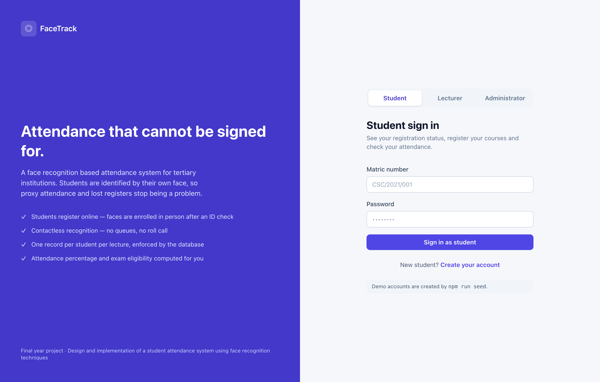
Figure 1. The sign-in screen on the Student tab, with the link for new students to create an account.
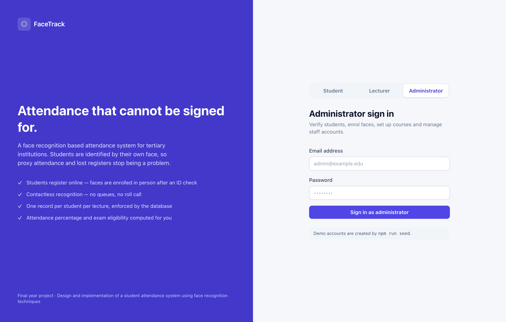
Figure 2. The Administrator tab. An account only works on its own tab; using the wrong one tells you which tab to use.
3.3 Demonstration accounts
Student tab
Matric no.
CSC/2021/001
Password
student1234
Any seeded student, CSC/2021/001 to CSC/2021/010, uses the same password.
Administrator tab
Email
admin@example.edu
Password
admin1234
Signs in as Dr. Grace Adeyemi.
Lecturer tab
Email
lecturer@example.edu
Password
lecturer1234
Signs in as Mr. Emeka Nwosu, lecturer of the CSC courses.
These are demonstration passwords
They are deliberately simple so the system can be shown and marked. Before real use,
create fresh staff accounts with strong passwords and remove these.
3.4 What each role can do
Action
Student
Administrator
Lecturer
Create an account online
✓
✗
✗
Register / drop own courses
✓
—
✗
See own attendance & eligibility
✓
—
—
Verify identity & capture a face
✗
✓
✗
Correct a student's details, reset a password
✗
✓
✗
Create courses, assign lecturers, manage class lists
✗
✓
✗
Create staff accounts
✗
✓
✗
Start a session, capture, mark manually, close
✗
✗
✓ own courses
View registers and course reports
✗
✓ all
✓ own courses
Signing out
Your name is at the bottom of the sidebar with a Sign out button.
The coloured label at the top — Student, Administrator or Lecturer
portal — always shows where you are. Sessions expire after 8 hours.
4. The student portal
Registering from anywhere, and following your own attendance.
Sidebar: Dashboard · Course registration · My attendance
Sign in on the Student tab with your matric number.
4.1 Registering online
Student/register
Open the site, choose the Student tab and click Create your account. The form has three parts, and almost every answer is picked from a list.
Personal details — full name (surname first), gender (list), phone number and email address.
Academic details — choose your faculty; the department list then shows only that faculty's departments. Choose your level and year of entry.
Matric number — the first parts are filled in for you from your department code and year of entry (for example CSC/2022/). Type only the final digits; the full number is shown underneath.
Type your JAMB registration number exactly as printed on your result slip.
Upload a passport photograph — a clear, recent photo of your face. The administrator compares it with you in person.
Choose a password, confirm it, and press Create my account. You are signed in straight away.
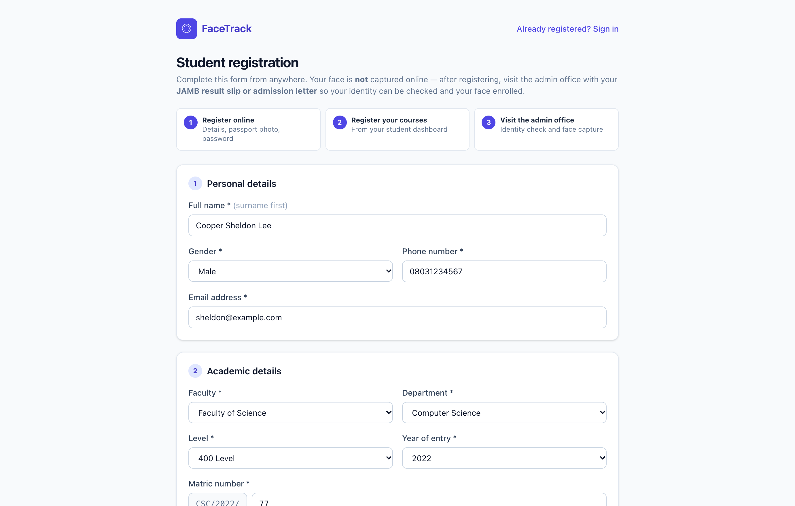
Figure 3. Online registration. Gender, faculty, department, level and year of entry are all dropdowns.
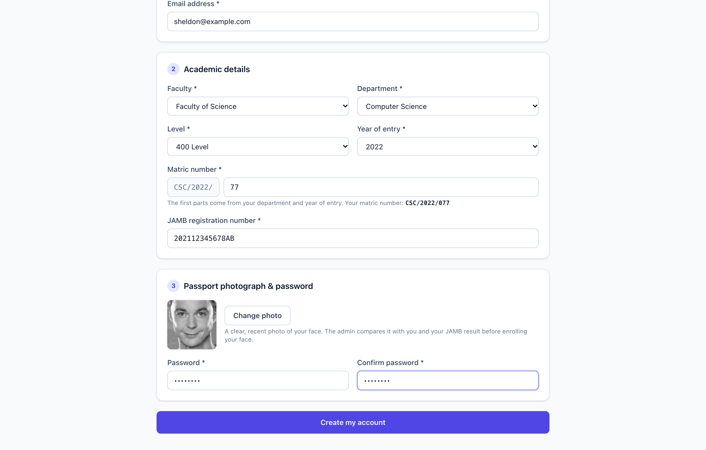
Figure 4. The matric number is assembled from the department and year (CSC/2022/ + 77 → CSC/2022/077); then the JAMB number, passport photograph and password.
Your face is not captured online
That happens only at the admin office (section 4.4). Registration is refused if the
matric number or JAMB number is already registered.
4.2 Student dashboard
Student/dashboard
A three-step progress tracker shows what is done and what is next, beside your record and passport photo. Until your face is enrolled, an amber banner reminds you to visit the admin office.
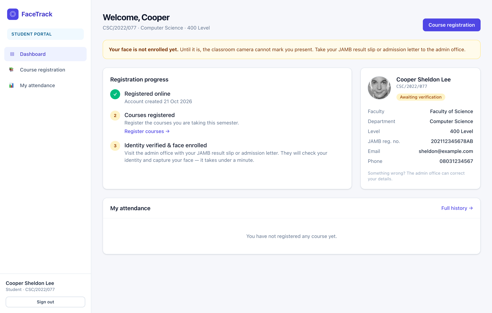
Figure 5. Straight after registering: step 1 done, steps 2 and 3 still to do.
4.3 Course registration
Student/my-courses
Open Course registration. Courses on offer is already filtered to your department and level; change the Department, Level or Semester dropdowns to see others.
Press Register beside each course you are taking. It moves to My registered courses, with your total units.
Drop removes a course — allowed only until attendance has been recorded for you on it.
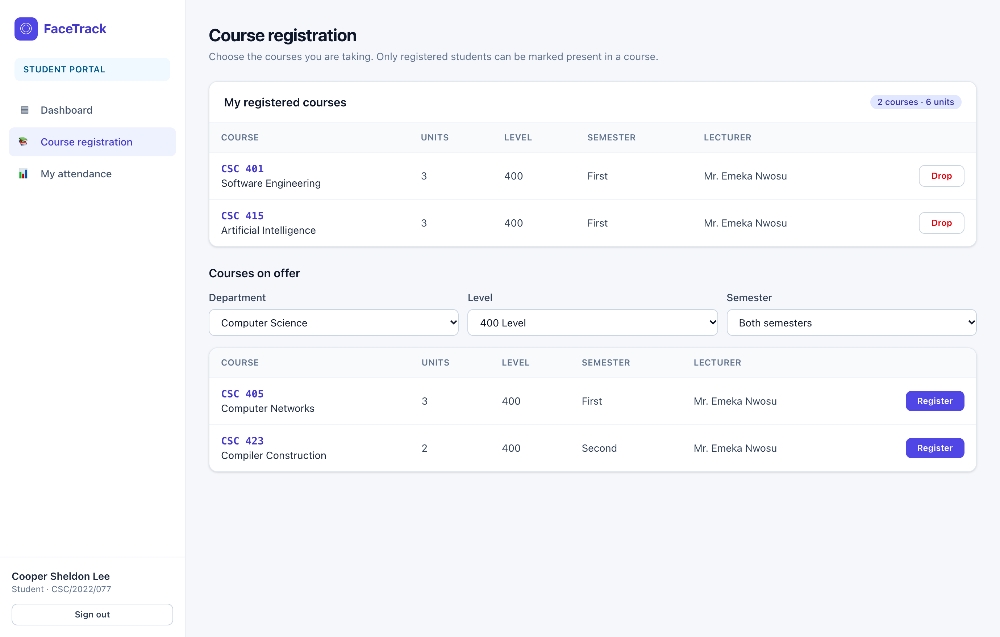
Figure 6. Two courses registered (6 units). Only students registered on a course can be recognised in its lectures.
4.4 Visiting the admin office
Take your JAMB result slip or admission letter (or school ID card) to the
admin office. The administrator compares you with the photograph on the document
and with your uploaded passport, then captures your face with the camera — it
takes under a minute. After that your dashboard shows Verified and the
classroom camera can mark you present.
4.5 Attendance & exam eligibility
Student/dashboard · /my-attendance
Once verified, the dashboard lists each registered course with classes held, classes attended (and how many late), your percentage, and whether you meet the requirement to sit the exam. My attendance lists every lecture you were marked in, filterable by course.
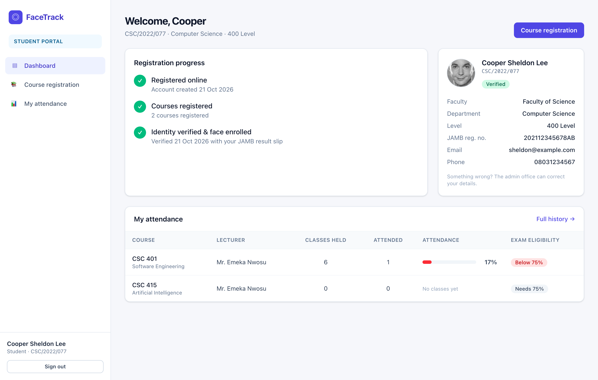
Figure 7. All three steps complete. CSC 401 shows 17% because five lectures took place before this student registered the course.
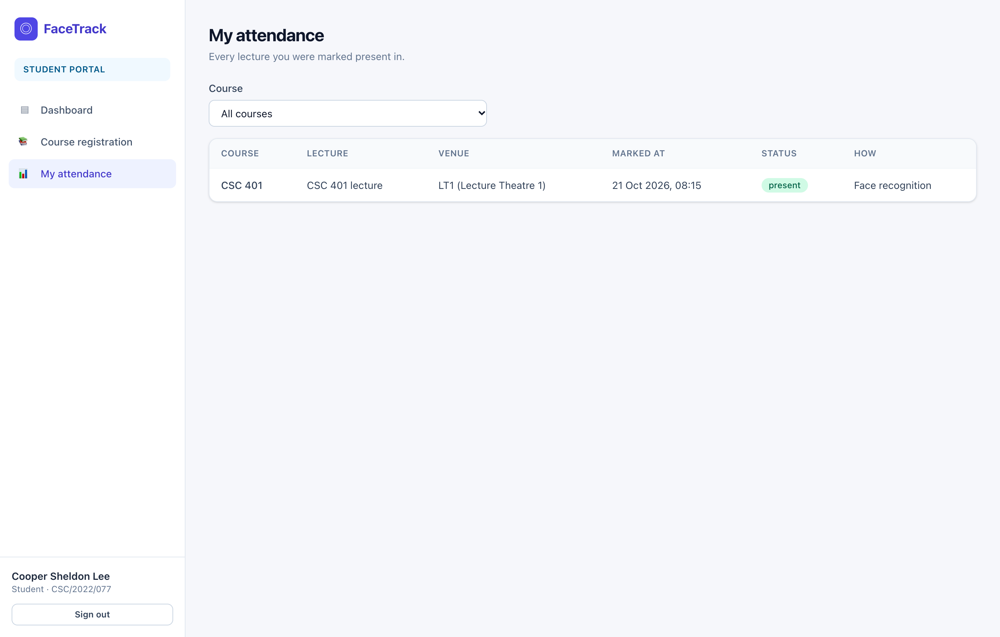
Figure 8. My attendance — each record shows whether it came from face recognition or was marked by the lecturer.
5. The administrator portal
Verifying students, capturing faces, and keeping records correct.
Sidebar: Dashboard · Students · Courses · Staff accounts · Session monitor · Attendance reports
Sign in on the Administrator tab.
5.1 Administrator dashboard
Admin/dashboard
A department-wide overview: how many students are awaiting verification, courses without a lecturer, lecturer accounts, attendance marked today and classes in progress. Verify students (top right) shows how many are waiting.
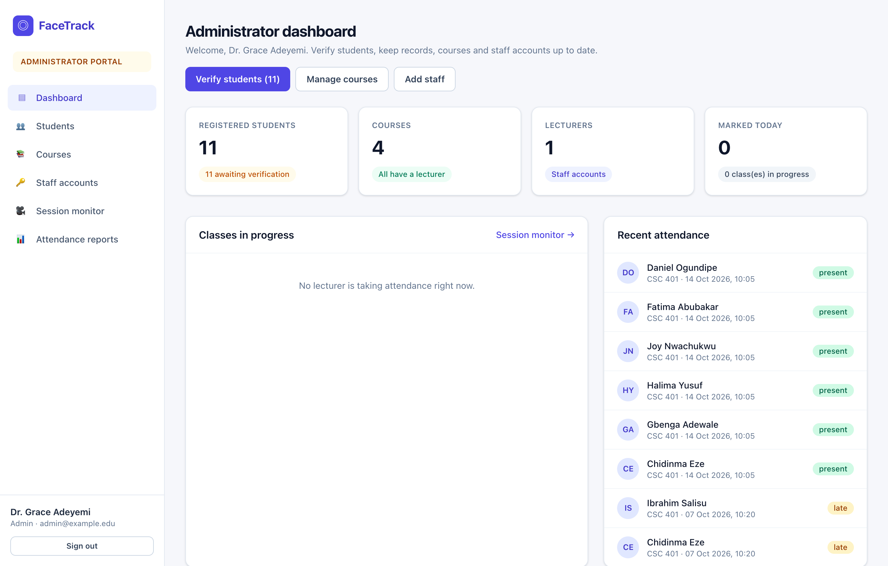
Figure 9. The administrator dashboard.
5.2 Students & the verification queue
Admin/students
Students appear here as soon as they register online. The page opens on Awaiting verification; the other tabs show Face enrolled and All students. Filter with the search box and the Department and Level dropdowns. Press Verify & enrol when a student arrives.
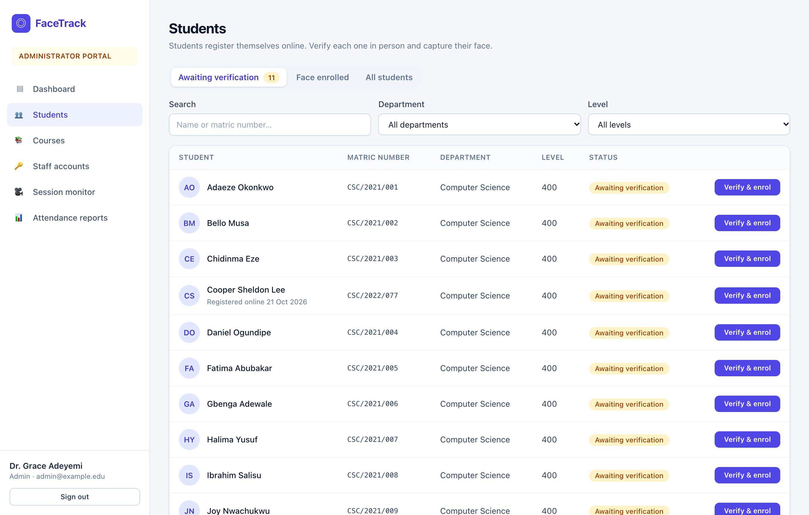
Figure 10. The verification queue. Students who registered online are labelled with the date.
5.3 Verify & enrol — the in-person step
Admin/students/[id]
This is the most important screen in the system. It ties a face to a verified identity.
Open the page early — ideally while the student is walking to your desk. The camera panel shows the engine preparing (Figure 11); wait for Start face capture.
Check the identity. Compare the student with their uploaded passport photo (shown on the page) and the photograph on their document. Choose the document from Document checked (JAMB result slip, JAMB admission letter, school admission letter or student ID card); the JAMB number is pre-filled. Tick the confirmation box. The camera stays locked until you do (Figure 12).
Press Start face capture and ask the student to look at the camera. Nothing else to press: three samples are taken automatically as soon as a face is in view, while on-screen prompts suggest a slight turn left and right (Figure 13).
When the panel turns green — Face captured in 1.4 s — press Verify student & save face. Use Retake if you are not happy.
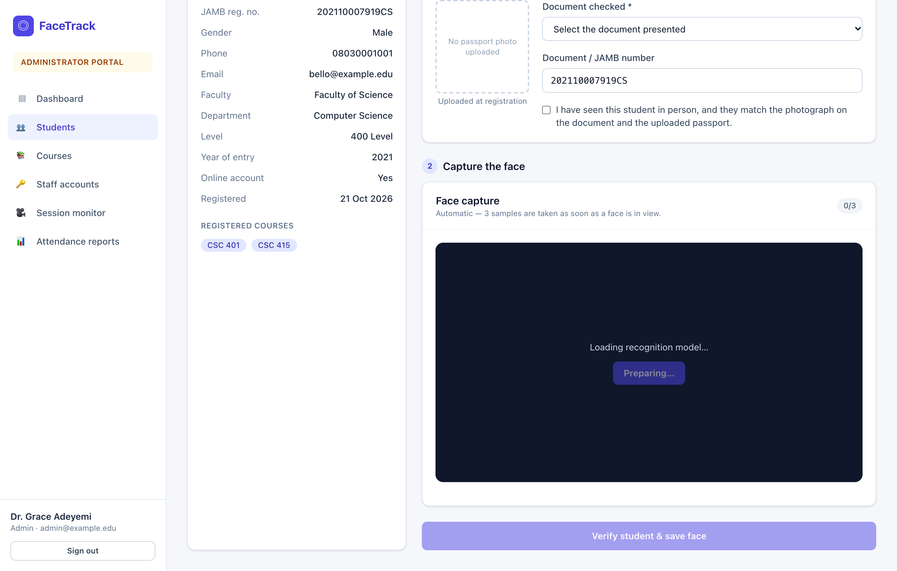
Figure 11. Just after opening the page: the engine is loading (Loading recognition model…, Preparing…). This is why the page should be opened early.
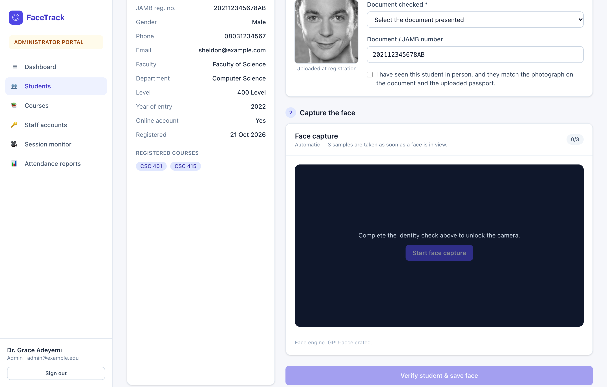
Figure 12. Engine ready, camera locked: “Complete the identity check above to unlock the camera.”
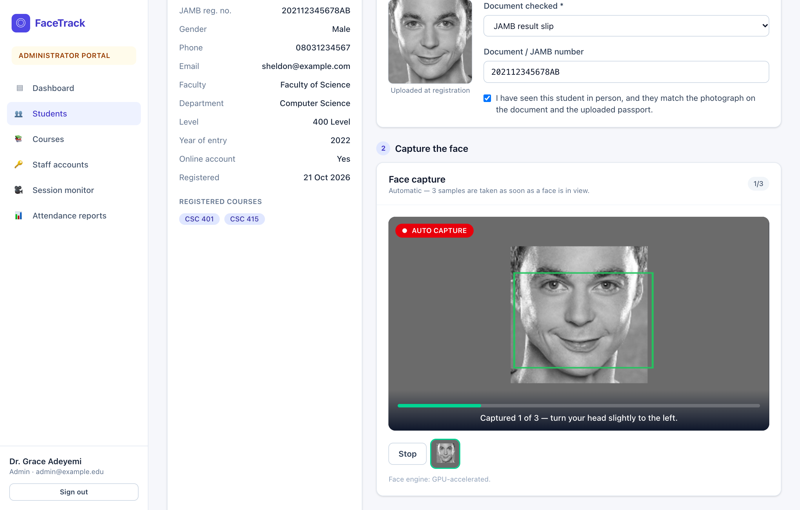
Figure 13. Automatic capture in progress — Captured 1 of 3 — turn your head slightly to the left. The green box shows the face being captured.
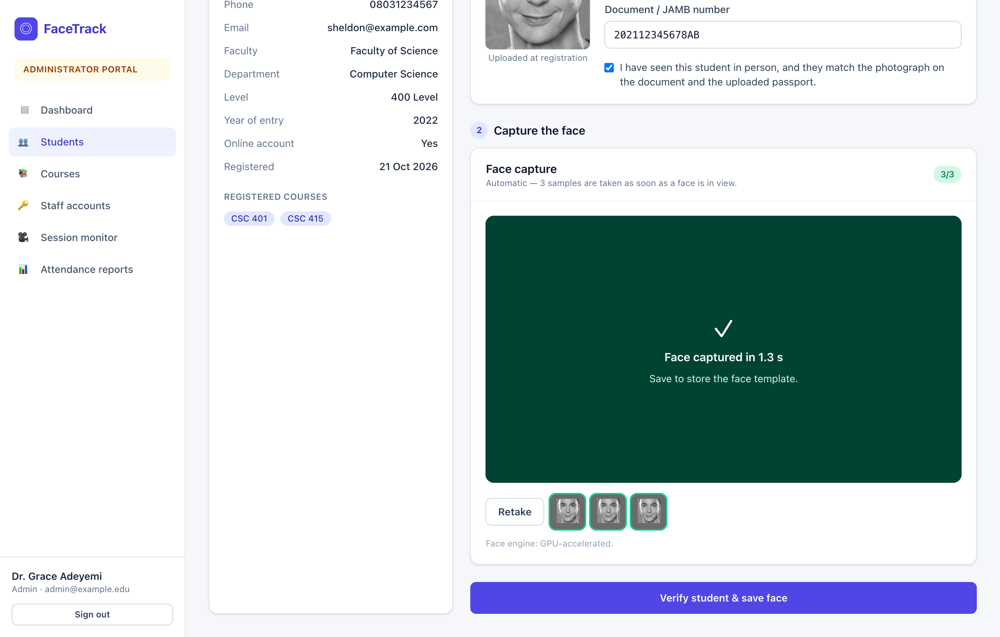
Figure 14. Done in 1.4 seconds, with the three sample thumbnails. The engine line confirms it is GPU-accelerated.
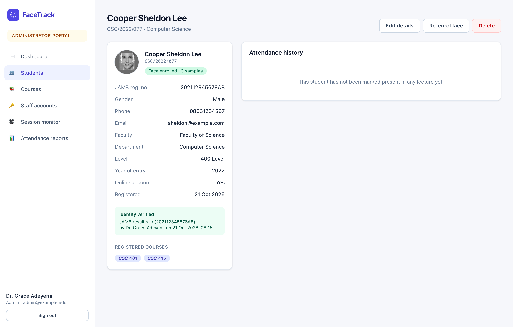
Figure 15. Saved. The profile records which document was checked, by whom and when.
Lighting is corrected automatically
Each camera frame's brightness is measured and a dim or washed-out image is corrected
before detection; a note appears under the camera when this happens. Capture still works
best with light on the student's face rather than behind them.
5.4 One person, one identity
Admin
If the face being saved is already enrolled for a different student, saving is refused and the existing record is named. This blocks someone enrolling their face under a second matric number.
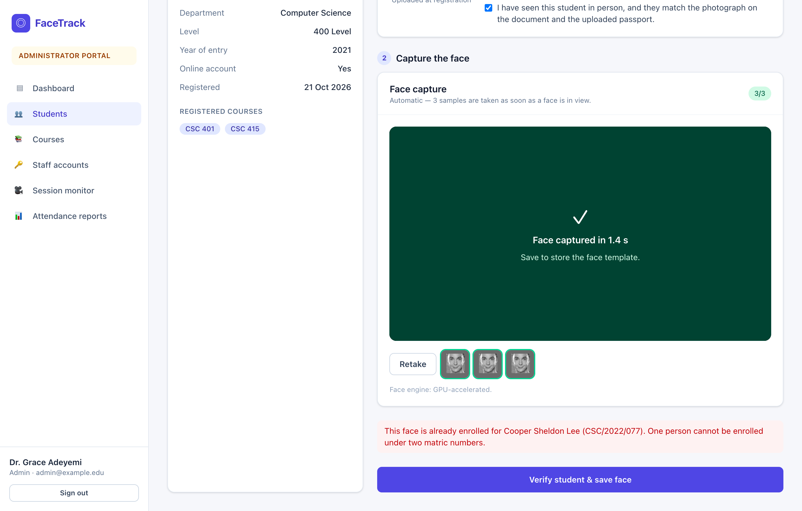
Figure 16.“This face is already enrolled for Cooper Sheldon Lee (CSC/2022/077). One person cannot be enrolled under two matric numbers.”
5.5 Correcting details & resetting a password
Admin/students/[id]
Open the student and press Edit details.
Correct the matric number or name, or pick new values from the gender, faculty, department, level and year dropdowns.
To help a student who forgot their password, type a new one under Reset password.
Untick Active to stop a student being recognised (for example after withdrawal) without deleting their history. Press Save changes.
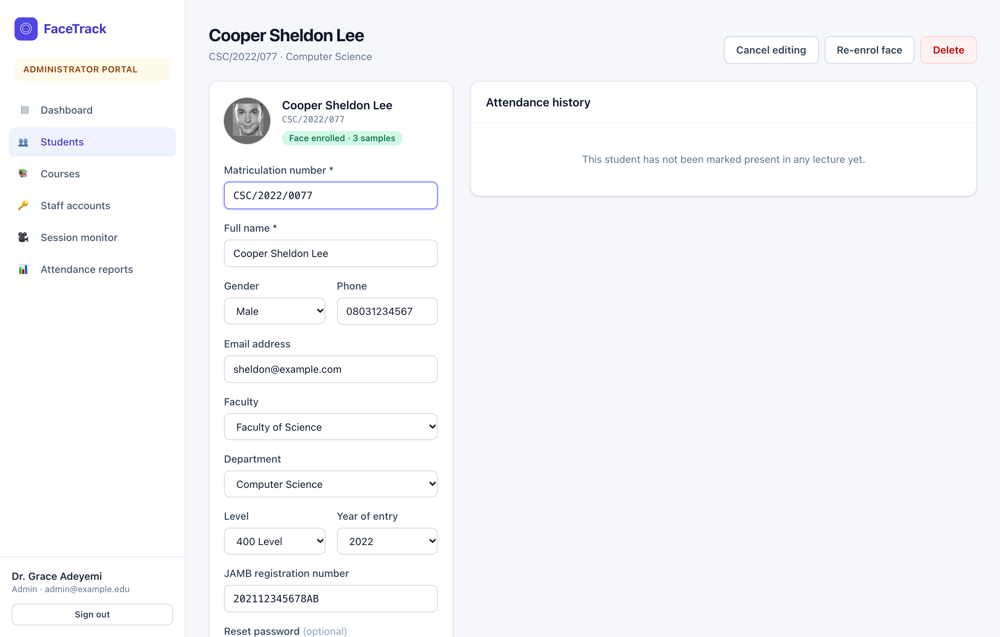
Figure 17. Editing a verified student. The face templates, courses and attendance history are kept. A matric number already used by someone else is refused.
Re-enrol face on a verified student repeats section 5.3 (identity check included) and replaces the stored templates.
5.6 Courses
Admin/courses
Press + New course.
Course code: choose the department prefix (e.g. CSC) and type the three-digit number. The department fills itself in.
Type the title; pick level, semester, credit units, lecturer and required attendance from the dropdowns.
Press Create course. Students can now register it from their portal.
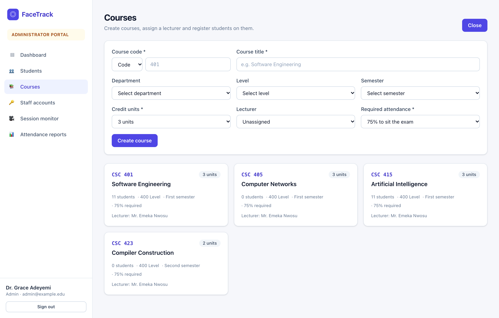
Figure 18. The new-course form. Only the course number and title are typed.
5.7 Editing a course & assigning its lecturer
Admin/courses/[id]
Open a course and press Edit course. Pick a different Lecturer to hand the course over (or Unassigned), change any detail, and Save changes. Only the assigned lecturer can see the course and take its attendance.
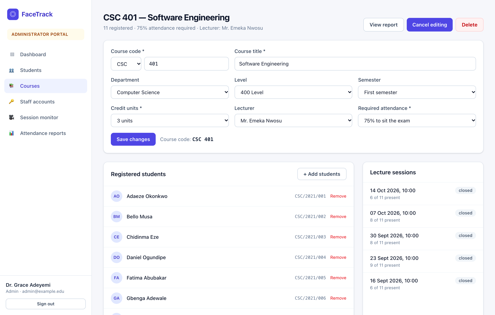
Figure 19. Editing CSC 401. Delete removes the course with all its sessions and attendance.
5.8 Class lists
Admin/courses/[id]
Students normally register courses themselves. The administrator can still adjust a class list: + Add students opens a picker of students not yet on the course; Remove takes a student off. Only students on a course's class list are recognised in its lectures.
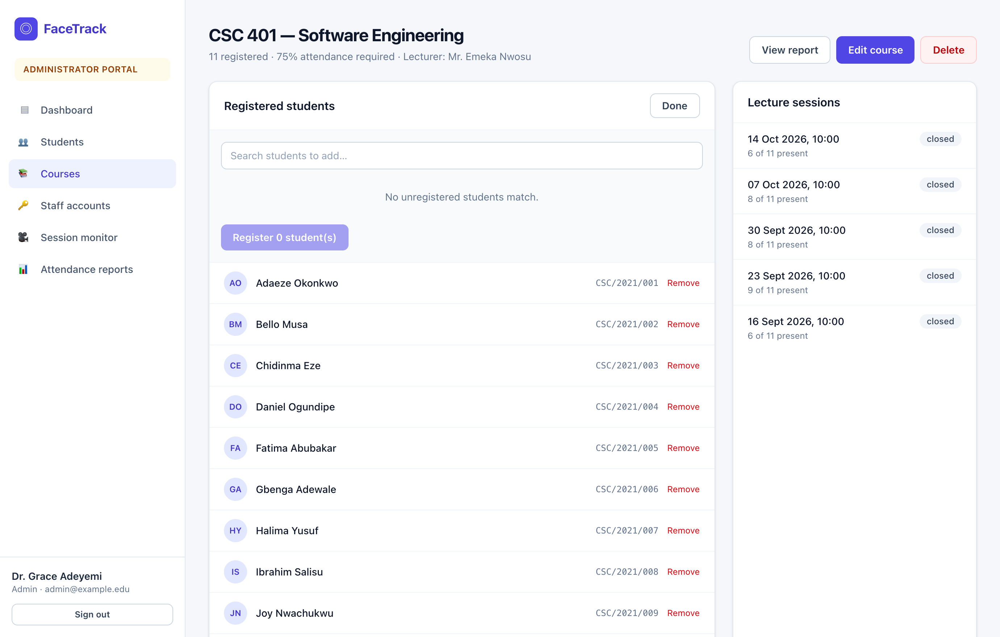
Figure 20. The add-students picker. A red no face badge marks students not yet verified.
5.9 Staff accounts
Admin/staff
Choose a title (Prof., Dr., Engr., Mr., Mrs., Ms.), type the name, email and a password of at least six characters, pick the role and department, and press Create account. Create a lecturer here before assigning them a course.
Figure 21. Staff accounts.
5.10 Session monitor & reports
Admin/sessions · /reports
The session monitor lists every lecture across the department — course, lecturer, time, venue and how many were present. It is read-only: View register opens any register, but starting, capturing and closing belong to the lecturer. Attendance reports shows any course as a grid (section 6.6).
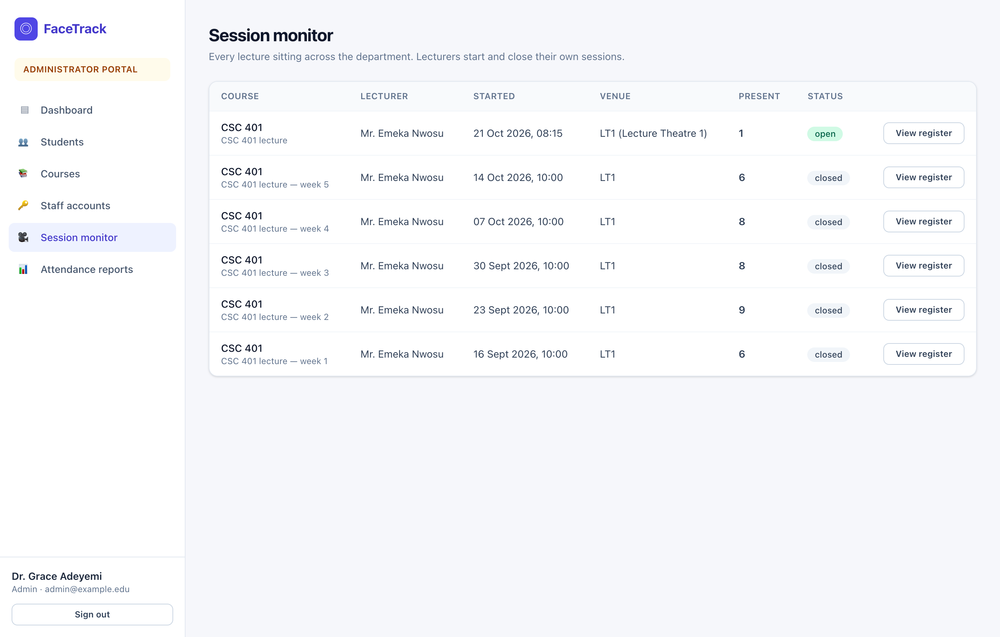
Figure 22. The session monitor, with a CSC 401 lecture in progress at the top.
6. The lecturer portal
Running a lecture and taking attendance — for the courses assigned to you.
Sidebar: Dashboard · My courses · My lecture sessions · Attendance reports
Sign in on the Lecturer tab.
6.1 Lecturer dashboard
Lecturer/dashboard
Your courses, sessions held, any class in progress (with Open camera), attendance marked today and recent records. Start a lecture session is at the top right.
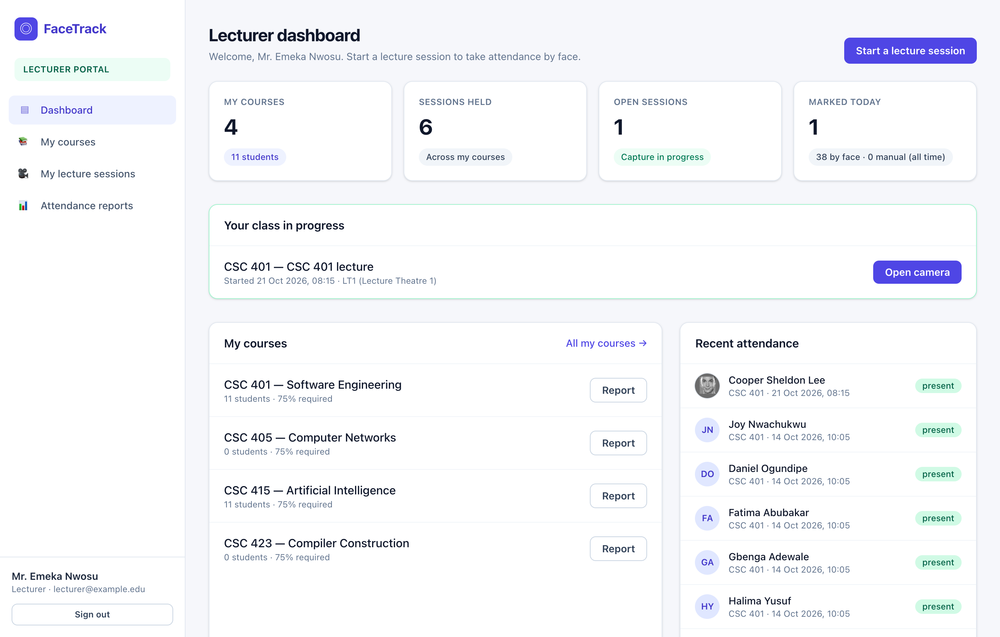
Figure 23. The lecturer dashboard with a CSC 401 class in progress.
6.2 My courses
Lecturer/courses
The courses assigned to you. Open one to see its class list (read-only) and session history, or to Start lecture session. If the list is empty, ask the administrator to assign you as the course's lecturer.
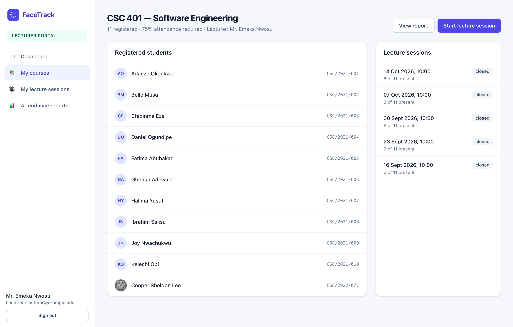
Figure 24. A course as the lecturer sees it.
6.3 Starting a lecture session
Lecturer/sessions
Choose the course, the venue (LT1, LT2, laboratories…) and Mark late after (5–45 minutes) from the dropdowns.
Press Start session & open camera. Only one session per course can be open at a time.
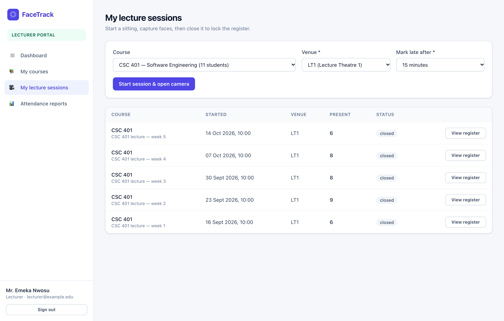
Figure 25. Every choice is a dropdown. Past sessions are listed below.
6.4 Live capture — taking attendance
Lecturer/sessions/[id]/capture
Open the capture screen a minute before you need it; wait until Start capture is enabled.
Press Start capture and allow the camera. A red SCANNING badge appears; a frame is analysed about every second.
Point the camera at the students. Each face gets a coloured box and name label; Marked present fills up as they are recognised.
For anyone the camera cannot pick up, press Mark manually beside their name.
When the lecture ends, press Close session to lock the register.
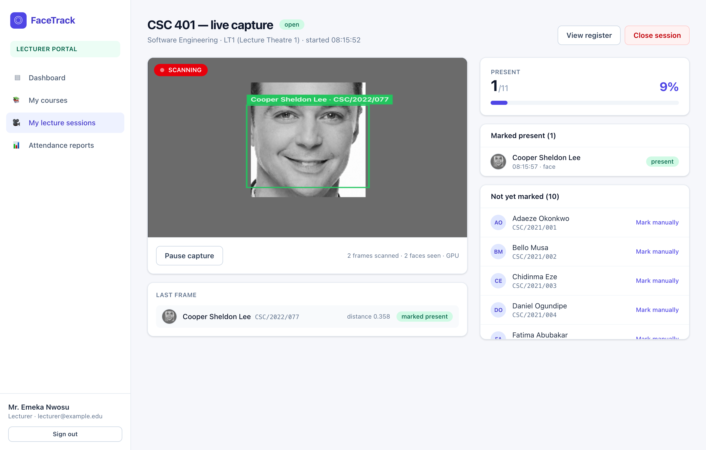
Figure 26. A verified student recognised on the first frame scanned (match distance 0.36 — below the 0.5 threshold) and marked present.
Green — newly markedRecognised and just saved to the register.
Blue — already markedRecognised, already recorded this session. Nothing changes.
Red — not recognisedNot verified yet, or not registered on this course.
The status line under the video“N frames scanned · N faces seen · GPU” shows the system is working. If
frames are not climbing, capture is paused. CPU mode (slower) means hardware
acceleration is off (section 2.2).
6.5 Session register
Lecturer/sessions/[id]
Who was present, late and absent, with times and the method (face or manual — face records show the match distance). Export CSV downloads it; Remove deletes a wrong record; Close / Reopen session locks or unlocks it.
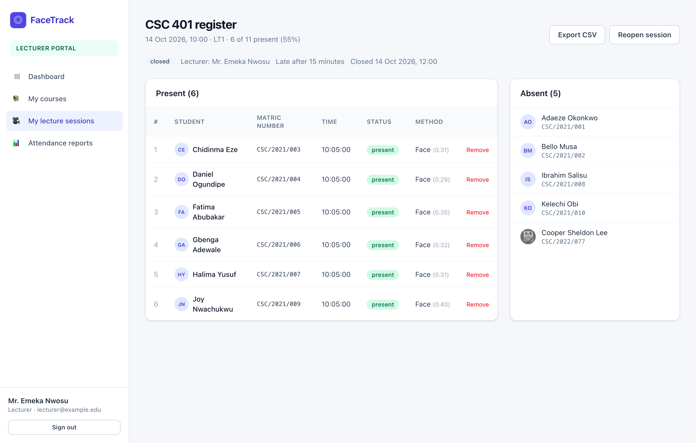
Figure 27. A closed register. The administrator sees the same page read-only.
6.6 Attendance reports
Lecturer & Admin/reports
Pick a course to see every student against every lecture (P present, L late, A absent), each student's percentage and exam eligibility, and the summary cards. Export CSV for the records.
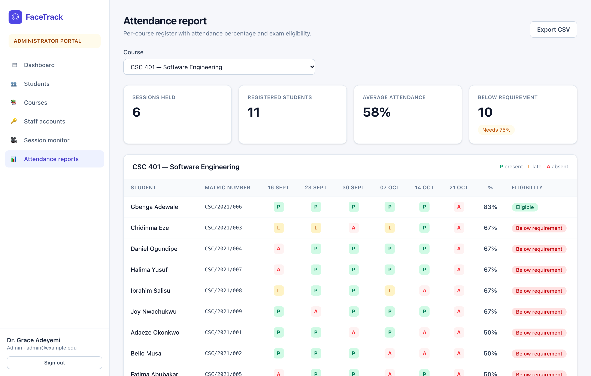
Figure 28. The CSC 401 report, best attendance first.
7. User flows
How the three portals hand work to each other.
Student Flow A — Registering (from anywhere)
STEP 1
Create account
details, JAMB no., passport
→
STEP 2
Register courses
filtered to dept & level
→
STEP 3
Visit admin office
bring JAMB result / letter
Administrator Flow B — Verifying and enrolling (in person)
STEP 1
Open page early
engine prepares
→
STEP 2
Check identity
document + passport
→
STEP 3
Auto capture
3 samples, ~2 s
→
STEP 4
Verify & save
duplicates refused
Lecturer Flow C — Taking attendance in a lecture
STEP 1
Start session
course, venue, cut-off
→
STEP 2
Start capture
allow the camera
→
STEP 3
Scan the room
green = marked
→
STEP 4
Mop up
mark manually
→
STEP 5
Close session
locks the register
All Flow D — Reporting
LECTURER / ADMIN
Course report
grid, percentages, CSV
↔
STUDENT
Own dashboard
percentage & eligibility per course
A worked example, end to end
#
Portal
Where
What happens
1
Student
/register
Registers as CSC/2022/077 with passport photo and JAMB number
2
Student
Course registration
Registers CSC 401 and CSC 415
3
Admin
Students → Verify & enrol
Opens the page early, checks the JAMB result slip, ticks the box
4
Admin
↳ Start face capture
Three samples in 1.4 s; Verify student & save face
5
Lecturer
My lecture sessions
CSC 401, LT1, late after 15 min → Start session & open camera
6
Lecturer
Live capture
Start capture → green box, Marked present (1)
7
Lecturer
↳ finish
Close session
8
Student
Dashboard
Sees the lecture counted, percentage and eligibility
8. Use cases
Sixteen documented scenarios. UC-02–04 belong to the student, UC-05–10 to the administrator, UC-11–15 to the lecturer.
UC-01Sign in through a portalAll users
Steps
Choose the Student, Lecturer or Administrator tab → matric number or email → password → Sign in.
Outcome
A signed session cookie (8 hours); that portal's dashboard opens.
If it fails
A generic message for wrong details; the right details on the wrong tab are told which tab to use.
UC-02Register onlineStudent
Steps
Create your account → personal details → faculty, department, level, year (dropdowns) → matric digits → JAMB number → passport photo → password.
Outcome
A student record awaiting verification; the student is signed in.
Rules
Matric and JAMB numbers must be unique; department, level and year must come from the lists; a passport photo is required. No face is captured.
My lecture sessions → course, venue, late cut-off → Start session.
Rules
Only the course's own lecturer; the course must have students; one open session per course.
UC-12Record attendance by face recognitionLecturer · primary use case
Steps
Start capture → point the camera at students.
Outcome
Each recognised face is recorded once, stamped present or late.
Rules
Only verified, active students on the course; only within the threshold; only while the session is open.
UC-13Mark a student manuallyLecturer
Steps
Capture screen → Not yet marked → Mark manually.
Outcome
A record tagged manual, distinguishable in every report.
UC-14Close a sessionLecturer
Outcome
The register is frozen; further recognition is rejected.
UC-15Correct a wrong attendance recordLecturer
Steps
Session register → Remove → confirm.
UC-16Produce an attendance reportLecturer / Administrator
Steps
Attendance reports → choose course → Export CSV.
Outcome
Full register with percentages and eligibility. Lecturers: own courses; administrators: any course.
9. Troubleshooting
The problems you are most likely to meet, and what to do.
Symptom
Why it happens
What to do
The camera button says Preparing…
The face engine is loading and preparing (first time in this browser session).
Wait 5–30 seconds; the panel shows progress. Next time, open the page earlier.
“Face engine: CPU mode”
The browser's hardware acceleration is off.
Capture still works, more slowly. Turn on Use graphics acceleration in browser settings and restart the browser.
“Complete the identity check above to unlock the camera”
By design.
Choose the document checked and tick the confirmation box.
Capture says “Looking for a face”
No face in the frame, or it is very small.
Have the student face the camera at about an arm's length. Follow the on-screen prompt.
“More than one face in view”
Someone else is in the frame.
Only the student being enrolled should face the camera.
“This face is already enrolled for …”
The person is already enrolled under another matric number.
Investigate before going further — this is the impersonation check working.
“Camera permission was denied”
The browser blocked access.
Click the padlock in the address bar, set Camera to Allow, reload.
Wrong-tab message at sign-in
Correct details on another portal's tab.
Switch to the tab the message names.
“This record has no online account yet”
The student was created before online accounts existed.
Administrator: Edit details → Reset password.
Matric or JAMB number “already registered”
Someone registered with it before.
If it is not the student's own account, the administrator investigates and corrects.
A red box — a real student is not recognised
Not verified yet, not on this course's class list, or inactive.
Mark manually now; then verify the student or check their courses.
Lecturer sees no courses
No course is assigned to them.
Administrator: open the course → Edit course → Lecturer.
“This session is closed”
The lecture was closed.
Reopen it from the register if it was closed by mistake.
Known limits of the prototype
Lighting at the extremes. Dim and washed-out frames are corrected automatically, but near-darkness or a face strongly backlit by a window can still be missed. Manual marking covers this.
Range. Faces must be reasonably large in the frame; one camera at the front will not reach the back of a 300-seat hall.
No liveness detection. A printed photograph held up to the camera could pass; defeating that needs blink or depth sensing, outside this prototype's scope.
The threshold is a trade-off. 0.5 is a sensible default, not a certainty.
10. Demonstration checklist & quick reference
Keep this page open on the day.
Before the panel arrives
Use Chrome or Edge with hardware acceleration on, on a laptop with a working webcam, facing a light source.
Sign in as Administrator and open Students → Verify & enrol for the student you will enrol. Wait until the button reads Start face capture and the line underneath says GPU-accelerated. The engine is now prepared for the whole session.
In a second browser window (or after the enrolment), sign in as Lecturer and open a live capture screen once, so it is ready too.
Have a passport photo ready on the laptop for the live registration.
The demonstration, in order
Student: /register → show the dropdowns and the matric number building itself → Create my account → Course registration.
Administrator: Students → Awaiting verification → Verify & enrol → check the JAMB slip → tick → Start face capture (about 2 seconds) → Verify student & save face.
Impersonation check: try to enrol the same face for another student → refused.
Lecturer: My lecture sessions → Start session → Start capture → green box → Close session.
Student: sign back in → the lecture counts on the dashboard.
Sign-in details
Portal tab
Sign in with
Password
Student
CSC/2021/001 … CSC/2021/010
student1234
Lecturer
lecturer@example.edu
lecturer1234
Administrator
admin@example.edu
admin1234
Live link: https://attendace-system-david.vercel.app/
Box colours & report symbols
newly marked
already marked
not recognised ·
P present L late A absent